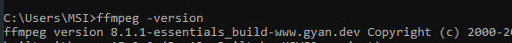
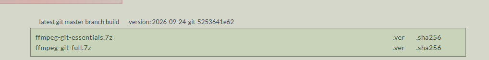
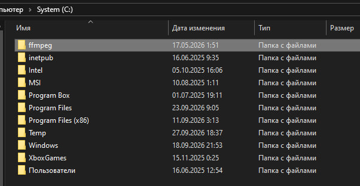
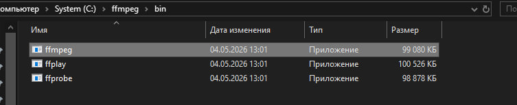
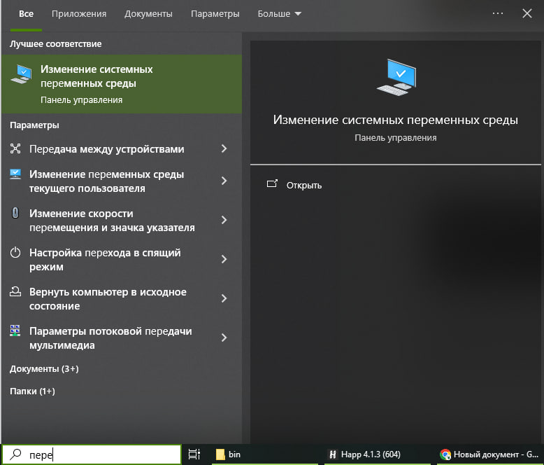
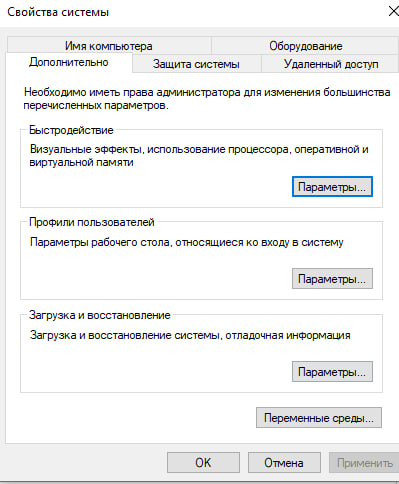
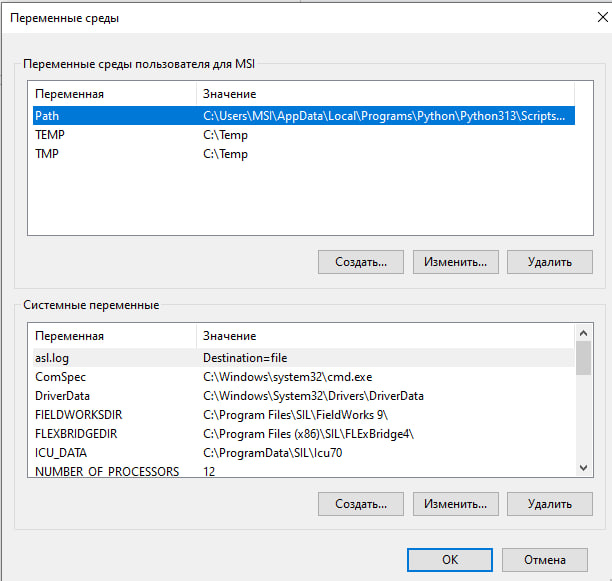
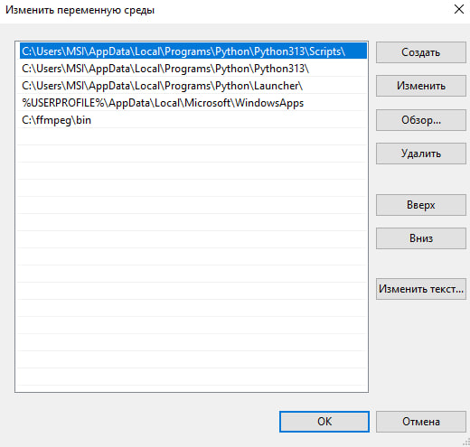

Один из способов уменьшить видео — сделать это с помощью ffmpeg. Эта штука в принципе пригодится вам, если в будущем вы собираетесь работать с видео (или рисовать анимации).
Для начала нужно проверить, есть ли он у вас вообще – как правило, базово он ни у кого не установлен.
Нажимаем Win+R, в появившейся строке вводим cmd (скорее всего, уже введено)
В появившееся окно вставляем следующую строку и нажимаем enter:
ffmpeg -version
Если ffmpeg у вас установлен, в первой строке вы сможете увидеть нечто вроде: ffmpeg version 8.1.1……, вот такое:

Если увидели эту строку, то большую часть иструкции можно пропустить:) Если нет — идём дальше
Если же версия не появляется, ffmpeg не установлен, нужно сделать это самостоятельно. Способа два – установить через командную строку или сделать это вручную. Я предлагаю вам воспользоваться вторым (просто потому, что мне он лучше знаком).
Если у вас Windows: переходим сюда и скачиваем ffmpeg по первой же ссылке:

Файл небольшой, скачается быстро
После этого распаковываем его в C:\ffmpeg

Папку создать надо самостоятельно, в неё распаковываем скачанный файл
Главное, чтобы в итоге у нас существовал файл с путём C:\ffmpeg\bin\ffmpeg.exe , вот такой:

Далее нам нужно прописать путь к ffmpeg, чтобы не приходилось делать это в командной строке из разу в раз.
Нажимаем комбинацию Win+S. Нам нужно найти переменные среды, напишите просто “перемен”, и этого, вероятно, будет достаточно. Далее на скриншотах покажу, что именно нужно делать:

"Изменение системных переменных среды" — то, что нужно. Жмём на него
Далее видим новое окно:

В самом низу, над "ок" есть "переменные среды...". Это нам и нужно, нажимаем

Видим Path. У вас, скорее всего, он базово будет выделен, но если нет – тыкаем на него и нажимаем на “изменить”, появится новое окно:

Вы можете видеть, что у меня ffmpeg уже прописан. У вас его нет, нужно это сделать.
Жмём на “создать”, а в появившуюся строку вставляем путь к ffmpeg.exe (C:\ffmpeg\bin), потом везде, где нам предлагают что-то выбрать, нажимаем “ок”.
Готово! Теперь закрываем это окно, закрываем старую командную строку, если ещё этого не сделали. Открываем новую: всё также Win+R, cmd. Вводим уже знакомую строку:
ffmpeg -version
Первая же строка выдачи покажет версию – значит, всё отлично, и теперь осталось самое простое. Будем “уменьшать” видео.
Надеюсь, командную строку вы ещё не закрыли…Но даже если – открывайте снова.
“Уменьшение” видео происходит за счёт ухудшения его качества. Видео для разметки – не фильм, здесь нам не обязательна возможность видеть каждую мимическую морщинку говорящего.
Поэтому для начала вам нужно найти, где лежит ваше видео и скопировать путь до него.
Ниже я приложу “шаблон” команды, который вам нужно будет немного поменять под себя. Менять шаблон в командной строке не получится, поэтому лучше скопируйте его и сделайте правильным в том же тг, а нужную версию вставляйте в командную строку:
Видео1 – ваш исходник. Пропишите путь к нему, например: C:\линда\запись.mp4
Видео2 – то, что получится после сжатия, пропишите к нему нужный путь и новое название. Например – C:\линда\запись_уменьш.mp4
-crf 28 – Здесь работает так: чем больше цифра, тем хуже качество будет у видео на выходе
Отлично! Теперь, когда вы изменили шаблон под себя, копируйте его, вставляйте в командную строку и жмите enter. Нужно будет немного подождать — вы будете видеть сменяющиеся цифры, что свидетельствует о том, что процесс ещё идёт. Как только всё остановится (вы заметите это сразу), проверяйте указанный путь.
Теперь там появилось новое видео, убедитесь в том, что всё в порядке.
Старое большое видео можно удалить. Или оставить на память, если хочется, но для работы в елане и для загрузки на диск оставьте всё-таки тот файл, который поменьше. Так будет проще и вам, и вашим ассистентам